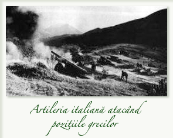
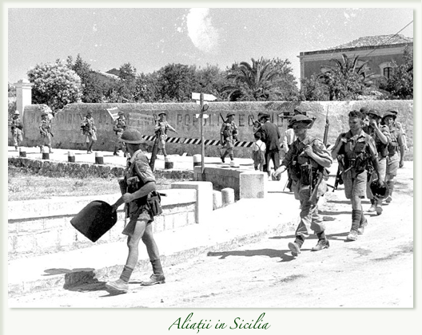
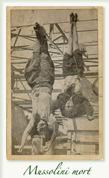

Al doilea deceniu este o fază de declin ce poate fi caracterizată prin înfeudarea crescândă a regimului fascist faţă de Germania nazistă.
După 1936 se asistă la consolidarea dictaturii şi la dispariţia ultimelor rămaşite ale regimului constituţional. La 19 ianuarie 1939, Camera Fasciilor şi Corporaţiilor, desemnată de către putere, înlocuia Camera Deputaţilor. Ducele dezvoltă un cult isteric al personalităţii, celebrat printr-o propagandă ce depăşeşte în excese şi în vulgaritate „era Starace“, secretar general al Partidului şi animator al Minculpop (Ministerul Culturii populare).
Sunt copiate formele exterioare al nazismului, „salutul roman“ şi „pasul roman“, imitaţie a „pasului de gâscă“. În martie 1938, Italia, care pusese deja în aplicare o politică de oprimare a minorităţilor francofone, slave şi germanice, instaurează rasismul şi antisemitisul, în ciuda protestelor papei şi a dezaprobării mute a unei părţi a opiniei publice.
După „afacerea etiopiană“, Italia strânge legăturile economice cu Germania şi fabricarea de armament maschează conjuctura dificilă. Orientarea către Berlin este accelerată de ambiţiosul Ciano şi marcată de acordurile de la Berchtesgaden (20-24 octombrie 1936), care definesc „Axa Roma-Berlin“. Italia se declară „portdrapel al antibolşevismului“. Ea aderă la pactul anti-Komintern, împreună cu Berlinul şi Tokyo (6 noiembrie 1937), şi părăseşte cu zgomot Societatea Naţiunilor (7 noiembrie).
Ducele intervine masiv în războiul civil din Spania prin trimiterea a 40 000 de „voluntari“ şi a unui important material de război, în sprijinul lui Franco. Mussolini este nevoit să accepte anexarea Austriei (12-13 martie 1938). El a pierdut iniţiativa şi încearcă să reacţioneze asociindu-se, împreună cu Daladier şi Chamberlain, la Conferinţa de la München (29 septembrie 1938), care nu poate evita cedarea de către Cehoslovacia a regiunilor locuite de germani, preludiu la dezmembrarea definitivă a acestui stat (martie 1939).
Italia se gândeşte atunci să ia unele garanţii şi, la 7 aprilie, ocupă Albania, satelitul său deja din 1921. În faţa reacţiei puterilor democratice la ameninţările totalitare, Mussolini şi Hitler semnează Pactul de oţel (22 mai), urmat de pactul germano-sovietic şi de atacul german împotriva Poloniei. Aceasta este cauza celui de Al Doilea Război Mondial, declarat celui de-al doilea Reich de către Franţa şi Anglia, la 3 septembrie.
Nici armata, nici economia italiană nu este gata de intervenţie şi Roma proclamă „non-beligeranţa“. Ciano, revenit din germanofilia sa iniţială, încearcă să frâneze marşul spre război, dar Mussolini este nerăbdător să participe la conflict. El face acest lucru la 10 mai 1940, atunci când Franţa este deja înfrântă, după victoria fulger a Germaniei. O campanie scurtă peste Alpi se termină prin armistiţiul din 24 iunie. Totuşi, Marea Britanie rezistă şi perspectivele unui război de scurtă durată dispar.
Berlinul, Roma şi Tokyo încheie, la 27 septembrie 1940, pactul tripartit, la care aderă Ungaria, România şi Bulgaria. Însă de acum înainte Italia nu mai este decât un element al strategiei hitleriste. Este tratată ca parte auxiliară, din ce în ce mai mult ca subordonată. Din ianuarie până în mai 1941, englezii cuceresc Africa Orientală şi Etiopia, precum şi Cirenaica.
„Expediţia de pedepsire“ lansată împotriva Greciei se loveşte de o rezistenţă violentă şi trebuie să fie stopată, după pierderi grele (31 octombrie-5 noiembrie 1941). În Balcani, ca şi în Libia, germanii sunt nevoiţi să preia comanda operaţiunilor. Mussolini nu primeşte decât slaba consolare de a ocupa Slovenia şi de a vedea atribuindu-se ducelui Aimon de Savoia un iluzoriu regat al Croaţiei. În 1942, un corp expeditionar este trimis în Rusia, unde va fi decimat. Situaţia în zona mediteraneană se deteriorează, o dată cu debarcarea aliaţilor în Africa de Nord, ocuparea Tunisiei şi recucerirea Cirenaicei. Pierderile navale sunt grele şi Peninsula începe să sufere bombardamente masive ce demoralizează populaţia.
În octombrie-noiembrie 1942, începe să se manifeste rezistenţa clandestină, adăugând la nemulţumirea datorată restricţiilor, germanofobia şi antifascismul. Ea acţionează prin greve spontane şi prin organizaţii a căror reţea se extinde rapid, mai ales în Nord.
Anul 1943 a fost decisiv. La 10 iulie aliaţii debarcă în Sicilia. O conjuraţie de palat, pornită din mediile militare şi monarhiste şi la care se asociază elita partidului, are ca deznodământ şedinţa dramatică a Marelui Consiliu fascist din 24-25 iulie. Mussolini, aflat în minoritate este arestat din ordinul lui Victor-Emanuel al III-lea şi plasat în domiciliu forţat. Germanii reacţionează, controlând îndeaproape întregul teritoriu italian neocupat de înaintarea aliaţilor.
În august, grevele se intensifică. După negocieri dificile, Badoglio încheie un armistiţiu, anunţat la 8 septembrie, iar guvernul său, strict controlat de către anglo-americani şi sprijinit pe o coaliţie antifascistă, practică „cobeligerenţa“. În iarna 1943-1944, frontul se stabilizează pe Linia Gustav, la sud de Roma. Italia este tăiată în două. În Sud, puterea este deţinută de Monarhie şi de Badoglio. În Nord, germanii, printr-o acţiune îndrăzneaţă a aviaţiei lor, îl eliberează pe Mussolini.
La 12 şi la 23 septembrie Ducele proclamă Republica socială italiană cu capitala la Salo, lângă lacul Garda. Acest regim revine la programul democratic şi socialist de la începuturile fascismului. Nu este decât o iluzie, iar repubblichini, strict controlaţi de către nazişti, sunt lipsiţi de mijloace de acţiune reală. Ei se răzbună sângeros şi, la 8 ianuarie 1944, la Verona, cinci opozanţi din 25 iulie, printre care De Bono şi Ciano, sunt judecaţi şi împuşcaţi. În întreaga Italie de Nord, grupuri de partizani, cu tendinţe politice diverse, înarmate prin paraşutările aliate şi îngroşate de rămăşiţele armatei regulate, îşi intensifică acţiunile, ce dau naştere unor represalii sângeroase. Roma este eliberată la 4 iulie 1944, dar linia frontului staţionează, din nou, pe Linia gotică până în aprilie 1945.
Începând din 12 aprilie, regele ceda puterea către fiul său, prinţul Umberto, numit locotenent general al regatului. La 10 iulie, guvernul Badoglio este înlocuit de cel condus de Bonomi, în care intră comuniştii. Efortul conjugat al Aliaţilor, al Corpului italian de Eliberare care operează alături de aceştia, şi al partizanilor are câştig de cauză asupra germanilor. Oraşele sunt străbătute de un val insurecţional popular.
Mussolini încearcă să ajungă în Elveţia. Recunoscut de către partizani la Dongo, într-un convoi german aflat în retragere, este capturat, supus unui soi de judecată populară şi, la iniţiativa conducătorului partizan comunist Walter Audisio, executat la 28 aprilie, împreună cu amanta sa, Claretta Petacci, şi un grup din elita partidului. La 6 mai 1945 Germania capitulează.
Continuare: Cronologie